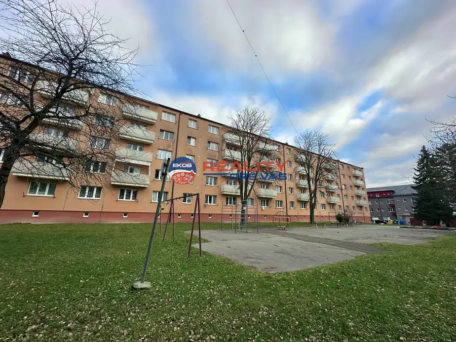
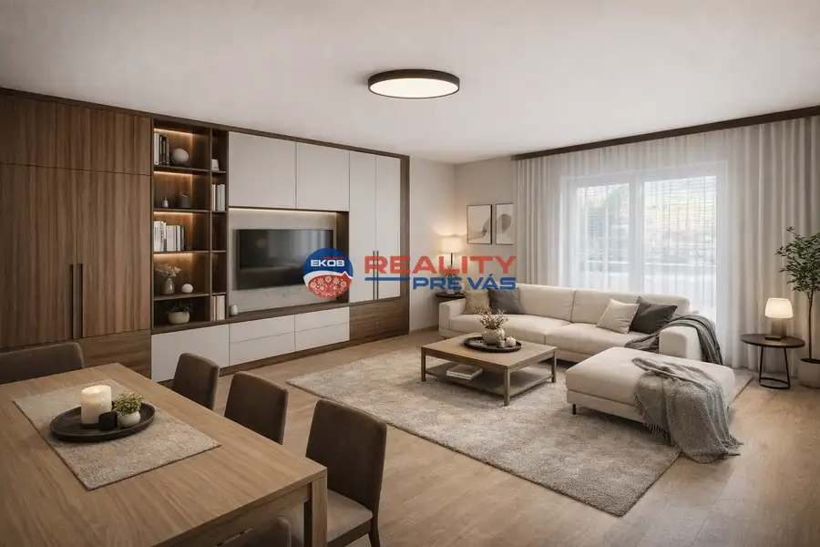
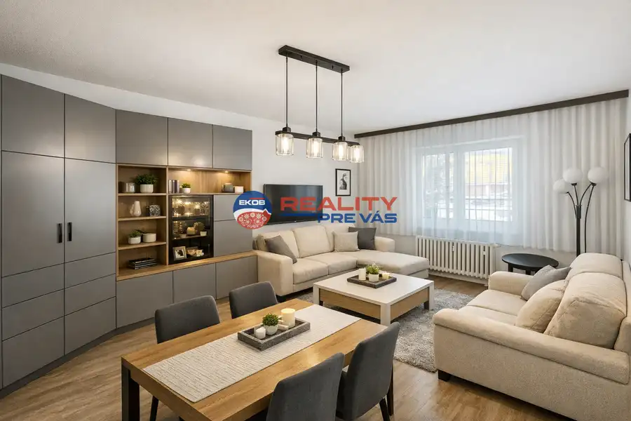
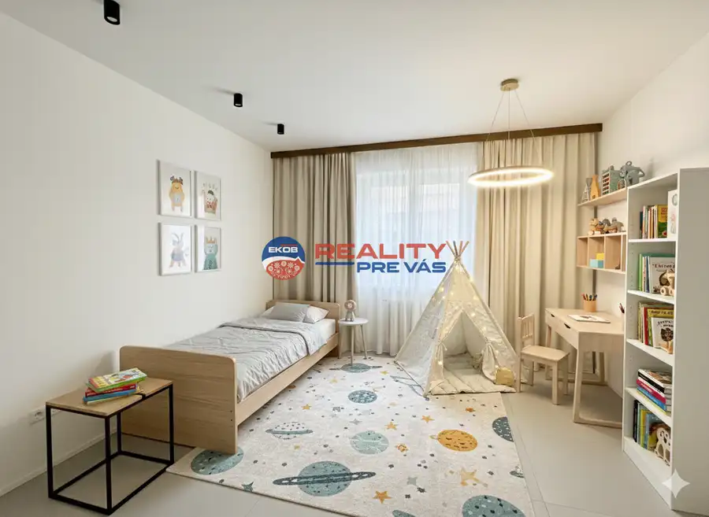
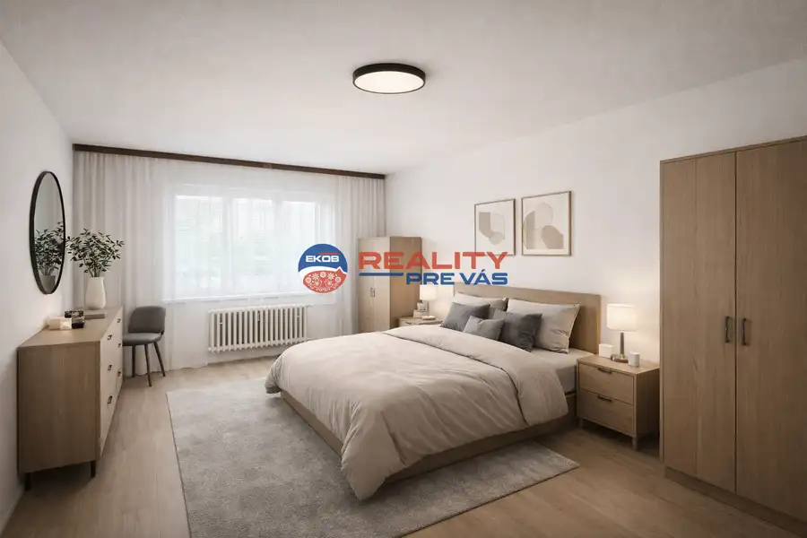
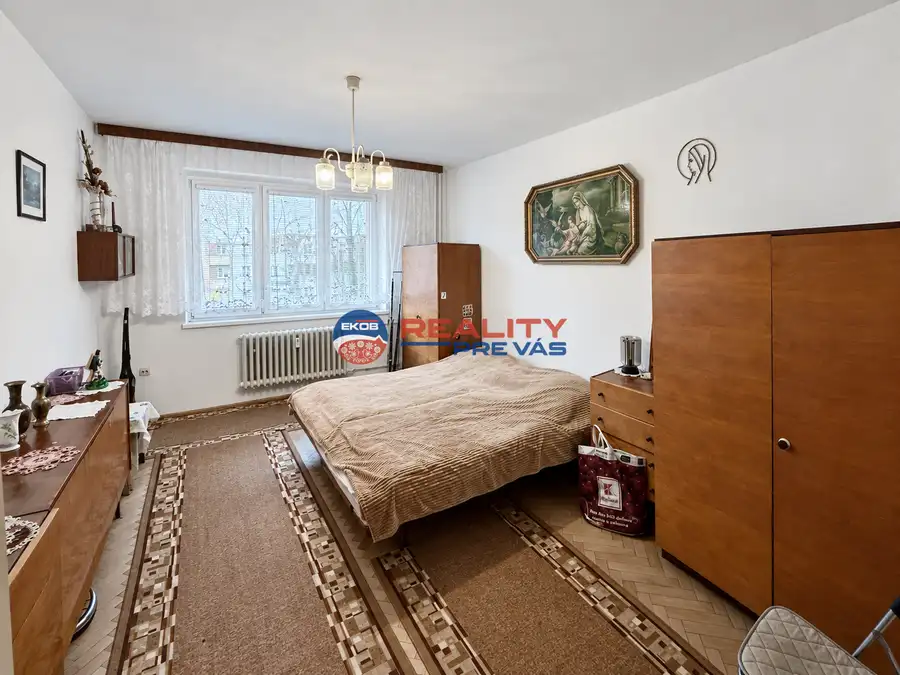

3 izbový byt s možnosťou vlastnej úpravy centrum Púchov
Púchov







- Dispozícia3-izbový
- Plocha74 m²
- Poschodie1.
- StavČiastočná rekonštrukcia
- VlastníctvoOsobné
O nehnuteľnosti
3-izbový byt s potenciálom na modernizáciu, 74 m², 1. poschodieEKOB – REALITY PRE VÁS ponúka na predaj priestranný 3-izbový byt v poloprerobenom stave, nachádzajúci sa na 1. poschodí zatepleného 5-poschodového bytového domu s výťahom. Byt predstavuje ideálnu príležitosť pre nových majiteľov, ktorí si chcú vytvoriť bývanie podľa vlastných predstáv bez nutnosti rozsiahlych stavebných zásahov.Základné informácieVýmera bytu: cca 74 m² poschodie3 samostatné nepriechodné izbyKuchyňaSamostatná kúpeľňaSamostatné WCPriestranná pivnicaZateplený bytový domVýťahTechnický stavV byte boli vymenené plastové okná s dvojsklom. Spoločné rozvody vody, kúrenia a odpadu v bytovom dome prešli rekonštrukciou, čo znižuje budúce náklady na údržbu a zvyšuje komfort bývania.Kúpeľňa a WC sú po staršej rekonštrukcii a poskytujú priestor na modernizáciu podľa aktuálnych trendov a potrieb nového majiteľa.Možnosti modernizácieKúpeľňa a WCvýmena obkladov a dlažieb,modernizácia sanity,doplnenie praktických úložných riešení.Kuchyňanová kuchynská linka a spotrebiče,možnosť polootvoreného prepojenia s obývacou izbou (v závislosti od statického posúdenia).Podlahy a interiérové dverenové vinylové alebo laminátové podlahy,výmena interiérových dverí pre jednotný vzhľad celého bytu.Úložné priestoryvstavané skrine v predsieni a spálni,efektívnejšie využitie priestoru.Elektroinštalácia a osvetleniedoplnenie zásuvkových okruhov,moderné zónové osvetlenie pre vyšší komfort bývania.Výhody nehnuteľnostiTri samostatné nepriechodné izby.Vhodné pre rodinu, spolubývanie alebo kombináciu bývania a home office.Zateplený bytový dom.Rekonštruované spoločné rozvody.Výťah a pohodlný prístup.Nízke podlažie vhodné pre rodiny s deťmi aj seniorov.Možnosť realizovať modernizáciu podľa vlastných predstáv.Priestranná pivnica poskytujúca dostatok úložného priestoru.KontaktREALITY PRE VÁS – Eduard Kukosa📞 +421 902 299 352✉️ eduard.kukosa@reality-prevas.sk🌐 reality-prevas.sk3D virtuálna prehliadka bytu je k dispozícii na vyžiadanie.
Parametre
- Cellar area
- 4 m²
- Cena vrátane energií
- Nie
- Druh
- 3 izbový byt
- Dátum zverejnenia
- 28. 01. 2026
- Energetická náročnosť
- Energeticky úsporný
- Energetický certifikát budovy
- nie je
- Energie
- 200
- Orientácia
- Severovýchodná
- Podlažie
- 1
- Počet izieb / miestností
- 3
- Počet pivníc
- 1
- Rok výstavby
- 1976
- Stav nehnuteľnosti
- Čiastočná rekonštrukcia
- Telekomunikácie
- Telefón, Internet, Káblová TV, Optická sieť
- Typ
- Predaj
- Typ konštrukcie
- Panelová
- Umiestnenie
- Zvýšené prízemie
- Vlastníctvo
- Osobné
- Vybavenie
- Pivnica, Verejné parkovanie, Špajza, Výťah
- Vykurovanie
- Ústredné
- Zariadenie
- Zariadené kompletne
- Úžitková plocha
- 74 m²